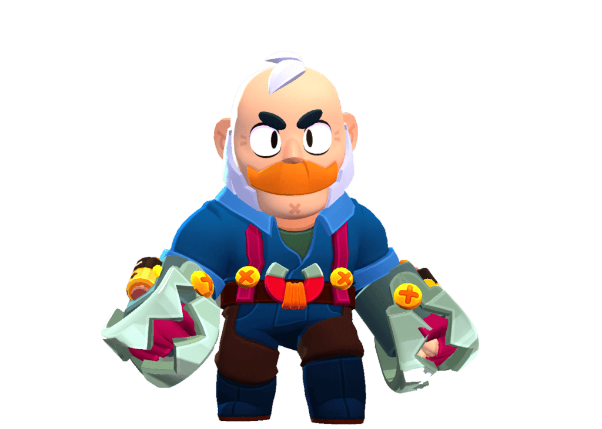

Description
Sam is a damage dealer and has the rarity of chromatic, he is a close range brawler. His appareance is a old men with metal claws
as hands. His attacks are named heavy haymakers and super, knuckle busters. Heavy haymaker make it that he punches with his claws, meanwhile
his super makes him throw a giant claw at people. Now, Sam has this unique ability that he begins the game with his super and after throwing
it, can pick it back up which will instantely charge it up again. He also gains a speed boost everytime he throws it.
Sam's attacks
- gadget: Magnetic Field
- gadget: Pulse Repellent
- star power: Hearty recovery
- star power: Remote recharge

SKINS